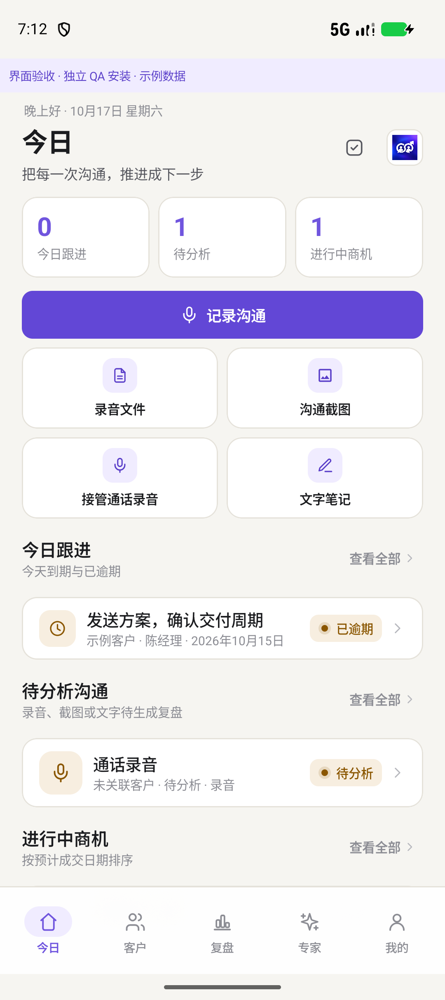
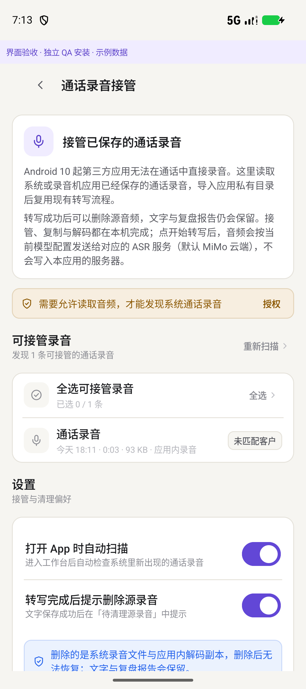
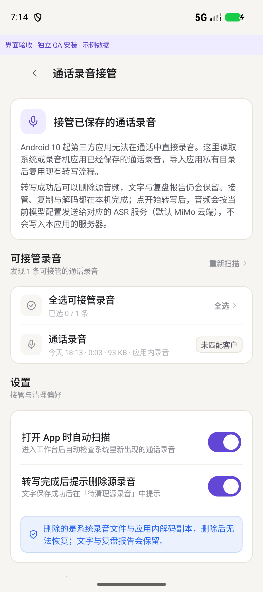
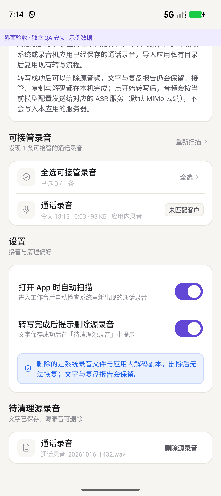
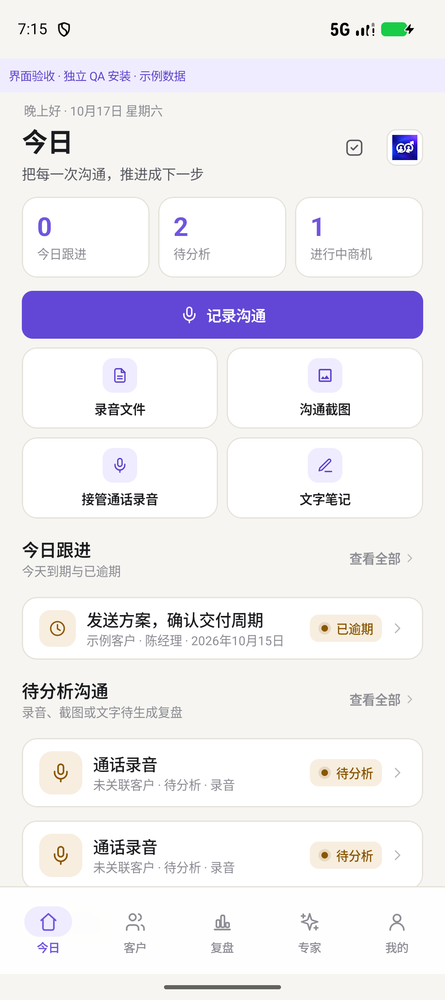
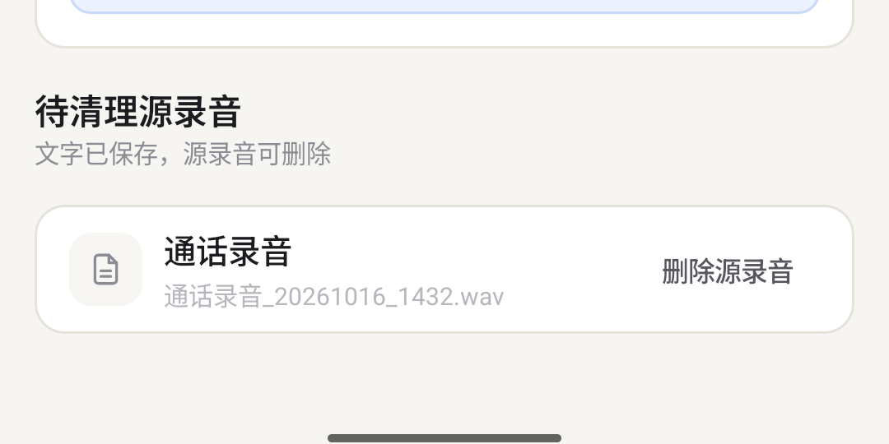
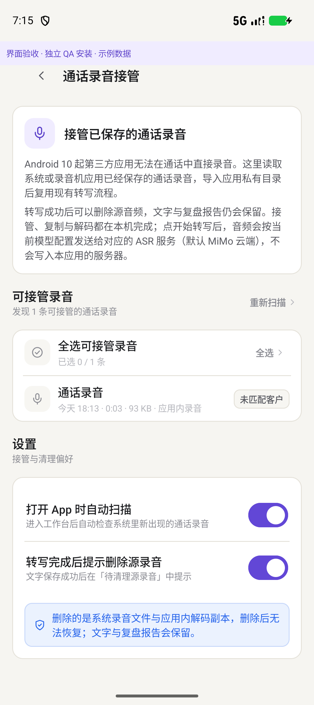

能力
- 今日页快捷入口「接管通话录音」；我的页设置行「通话录音接管」。
- 扫描系统音频库（MediaStore）+ App 内
recordings目录；按关键词/电话号码/日期/目录识别候选。 - 用户勾选后复制/解码为 PCM16 WAV 到私有目录，生成
kind=audio记录；匹配到客户时自动带上客户。 - 转写需要配置模型/试用额度；无模型时只导入并提示后续转写。
- 文字保存后出现「待清理源录音」；二次确认后可删除源音频，文字与复盘报告保留。
本次新增：XSalers 通话录音接管。接管系统/录音机已保存的通话录音，复用既有「转写 → 复盘」链路；文字保存后可清理源音频。
0.12.0 · versionCode 12 两 flavor 单元测试 600 项通过 正式 APK 已构建 模拟器验证通过本报告记录 0.12 的功能实现、证据与限制；不把“已实现”写成“已全量验收”，APK/SHA 与 7 张截图已回填。
| 项目 | 0.12.0 |
|---|---|
| 版本 | versionName 0.12.0 / versionCode 12（由 0.11.0 / 11 升级） |
| 范围 | XSalers 新增「通话录音接管」功能；Xfriend 无新增功能；视觉系统沿用 0.11，不新增 token/组件 |
| 不改动 | 不新增后台常驻服务；不改动 CRM 成交状态；不实现通话中录音；既有转写/复盘管道复用 |
| 安装升级 | 同签名覆盖安装即可；不要先卸载，避免清除本机数据 |
| 交付状态 | 正式 debug APK 已构建（2026-10-18 03:28）；两 flavor 单测 600 项通过；模拟器授权/接管/去重/删除链路验证；lint 未执行（非阻断） |
Android 10 起第三方应用不能在通话中直接录音。0.12 的“接管”是读取系统/厂商录音机已经保存的通话录音，导入 App 私有目录后复用既有 ASR → 复盘流程。
recordings 目录；按关键词/电话号码/日期/目录识别候选。kind=audio 记录；匹配到客户时自动带上客户。入口：XSalers 今日页 → 快捷入口「接管通话录音」；或 我的 → 「通话录音接管」。页面标题「通话录音接管」。详细说明见 docs/CALL-RECORDING-0.12.md。
| 文件 | 类型 | 作用 |
|---|---|---|
SalesCallRecordings.kt | 新增 | 扫描/识别/格式化/客户匹配/本地源删除；CallRecording、CallRecordingSettings、CallRecordings |
SalesCallRecordingsScreen.kt | 新增 | 页面：授权 banner、候选多选、接管并转写、忽略、设置、待清理源录音、删除确认 |
SalesViewModel.kt | 修改 | 自动/手动扫描、接管、忽略、设置持久化、待清理列表、删除源录音（API<30 分支） |
SalesDomain.kt | 修改 | Communication 增加 sourceUri/sourceName/sourceDeleted，JSON 向后兼容 |
SalesStore.kt | 修改 | SalesData 增加 callAutoScan/callDeleteAfterTranscribe/callSkipped |
SalesScreen.kt | 修改 | 今日页入口、我的页设置行、页面路由 |
SalesMedia.kt | 复用 | decodeAudio：MediaExtractor/MediaCodec 解码为 PCM16 WAV，限制 4 小时 |
AndroidManifest.xml（xsalers） | 修改 | 新增 READ_MEDIA_AUDIO、READ_EXTERNAL_STORAGE (maxSdkVersion=32) |
SalesCallRecordingsTest.kt | 新增 | 12 个单测：文件名/日期/号码/标题、时长/大小、JSON 往返、旧数据默认值、WAV 时长 |
0.12 不新增依赖；页面全部使用既有 Xf 组件与 0.11 设计令牌。
| 项目 | 说明 |
|---|---|
| 音频读取 | Android 13+ READ_MEDIA_AUDIO；Android 12 及以下 READ_EXTERNAL_STORAGE（manifest maxSdkVersion=32）。仅点击「授权」时申请。 |
| 无权限时 | 只扫描 App 自己的 recordings 目录；页面显示受限提示，可稍后重新授权。 |
| 删除系统录音 | API 30+ 走 MediaStore.createDeleteRequest 系统确认；API 26–29 直接 contentResolver.delete（App 内二次确认后）。 |
| 删除 App 内录音 | 删除 App 私有目录副本与源文件；不可恢复。 |
| 保留内容 | 删除源音频后，文字、原文、复盘报告保留；sourceDeleted=true 后不再提示。 |
| 隐私 | 接管、复制与解码在本机完成，不写入本应用自有服务器；转写会把音频发送给所配置的 ASR 服务（默认 MiMo 云端 https://api.xiaomimimo.com/v1，mimo-v2.5-asr），是否离开本机取决于模型配置。 |
| 不做 | 通话中录音、后台常驻/定时扫描、云端录音存储、自动改写 CRM 成交状态。 |
| 范围 | 结果 | 状态 |
|---|---|---|
| XFriend debug 单测 | 38 suites / 300 tests，0 failures / 0 errors | 已通过（2026-10-18） |
| XSalers debug 单测 | 38 suites / 300 tests，0 failures / 0 errors | 已通过（2026-10-18） |
| 两 flavor 合计 | 600 tests，0 failures / 0 errors | 已通过 |
| 0.11 基线 | 574 tests，0 failures / 0 errors | 历史基线 |
| lint | 未执行 | 非阻断 |
构建：build-0.12-release.log，BUILD SUCCESSFUL in 13m 58s；93 actionable tasks（45 executed / 48 up-to-date）；0 compile errors / 16 warnings；同日志含两 flavor 单测。
环境：Pixel_9 模拟器 / Android 37 / 1080×2424 / 420dpi；独立 QA fixture（com.singu.xsalers.mobile.qa）。已验证：未授权提示 + 授权；pm grant READ_MEDIA_AUDIO 后提示消失、候选正常；全选 → 接管并转写(1) → 今日「待分析」1→2、新增「通话录音」；去重后仅剩 1 条候选；删除源录音 → 确认 → 卡片消失、外部文件已删除、文字/报告保留；crash buffer 为空。
未覆盖：fixture 无法配置模型，真实 ASR 转写未端到端（接管只完成复制/解码并生成待分析记录）；删除链路用「已转写」种子记录验证；不声明真实 ASR 全流程通过。
以下截图在 docs/qa-0.12/；除 06 外均为 1080×2424 PNG；06-pending-delete.png 是 04-granted.png 底部「待清理源录音」卡片裁剪（1080×540），不是独立全屏截图。尺寸与 SHA-256 见 docs/verification-0.12.json。







截图路径以 docs/CALL-RECORDING-0.12.md 与 docs/verification-0.12.json 的记录为准；06 为裁剪图，内容与页面一致。
说明：0.12 正式 APK 已构建（2026-10-18，debug 双 flavor，-PsalesUiFixture=false）。以下值来自实际文件与 aapt2 badging 校验；两份副本同文件同 SHA-256。
| 项目 | Xfriend | Xsalers |
|---|---|---|
| 版本 | 0.12.0 / versionCode 12 | 0.12.0 / versionCode 12 |
| 包名 | com.singu.xfriend.mobile | com.singu.xsalers.mobile |
| APK 文件名 | Xfriend-0.12.0.apk | Xsalers-0.12.0.apk |
| 大小（bytes） | 26,499,349 | 26,499,509 |
| SHA-256 | C3457F4301E1814D824A31BA34ABE63CA838DE78FA02E5A1FEF1740D0AA33C63 | 8B6FB83D686142C87478B7CE82FCF155E77829706932AC4015B41861B2CFC9C8 |
| mtime | 2026-10-18 03:28:27 | 2026-10-18 03:25:49 |
| 构建日志 / 结果 | build-0.12-release.log / BUILD SUCCESSFUL 13m58s；93 tasks（45 executed / 48 up-to-date） | |
| aapt2 badging 校验 | 包名、versionName=0.12.0、versionCode=12、compileSdk=34 均通过 | |
| 交付副本 | D:\build_apk\Xfriend-0.12.0.apk / D:\build_apk\Xsalers-0.12.0.apk（与 .artifacts\0.12-release\ 同 SHA） | |